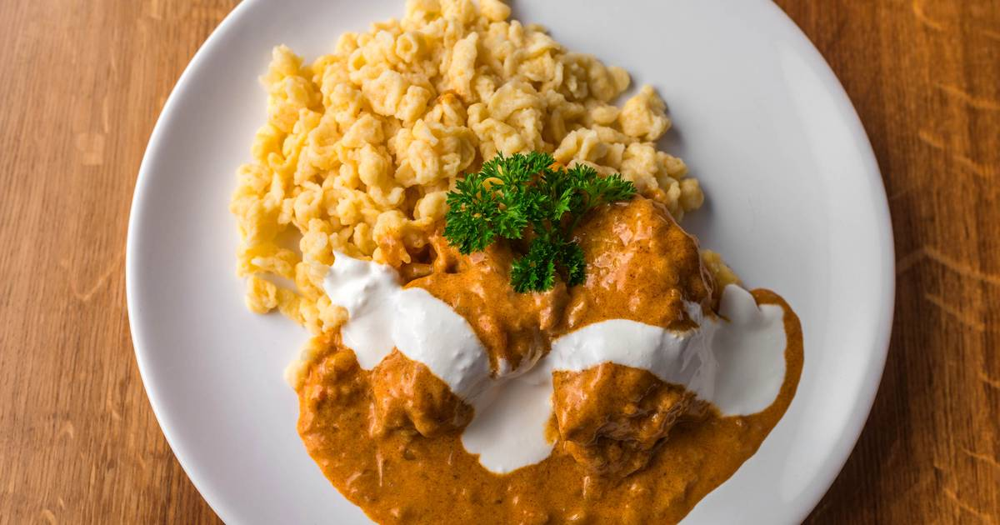
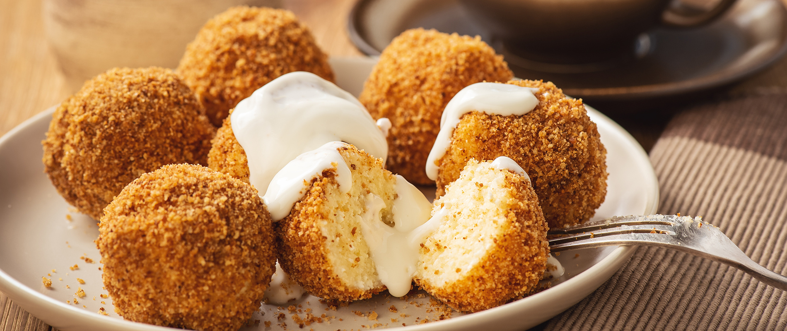
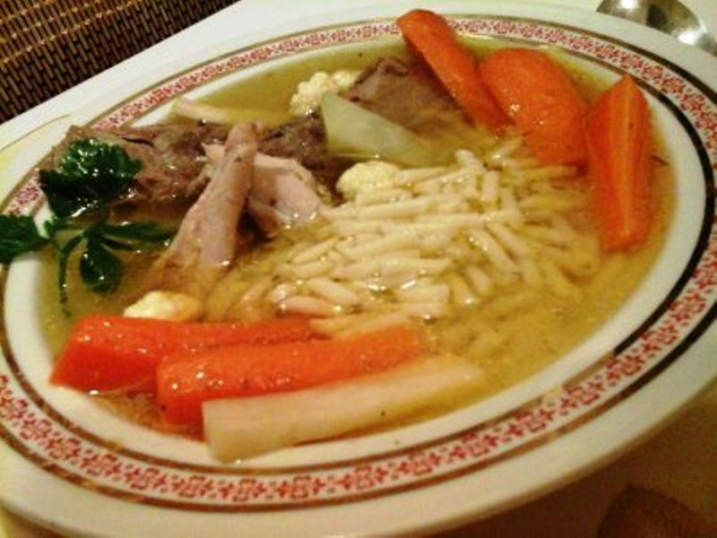

Üdvözlünk a Receptgyűjteményben!
Weboldalunk célja, hogy összegyűjtsük a legjobb recepteket az egyszerű hétköznapi ételektől kezdve a különleges fogásokig. Minden receptünket gondosan válogattuk össze, hogy garantáljuk az ízek harmóniáját és a könnyű elkészítést.
Legyen szó gyors reggeliről, családi vacsoráról vagy ünnepi lakomáról, itt megtalálhatod a tökéletes receptet. Ne felejtsd el megosztani a saját receptjeidet is, hogy mások is kipróbálhassák az ötleteidet!
Kiemelt Receptek

Paprikás Csirke
Klasszikus magyar ízek. Nézd meg a receptet!

Túrógombóc
Egy ellenállhatatlan desszert receptje.

Tyúkhúsleves
Az igazi vasárnapi klasszikus.
Miért válassz minket?
A Receptgyűjtemény nem csupán egy egyszerű receptoldal. Közösség vagyunk, amely összeköti az embereket az ételeken keresztül. Itt mindenki találhat inspirációt, és megoszthatja saját kedvenceit másokkal.
- Könnyen követhető receptek lépésről lépésre.
- Gyors ételek elfoglalt napokra.
- Különleges alkalmakra szánt ünnepi menük.
- Személyes receptek megosztásának lehetősége.